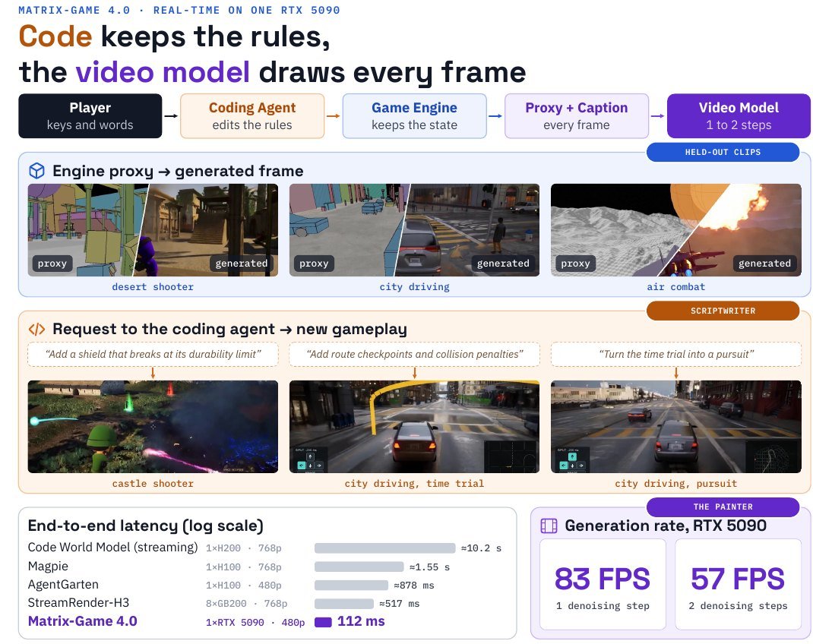

Think of a play with a strict stage manager and a fast scene painter. The manager tracks where everyone is and what the rules allow; the painter only turns the manager's chalk sketch into a finished backdrop, quickly enough to keep up. If the painter forgets something, the next sketch puts it back.
연극에 깐깐한 무대 감독과 손 빠른 배경 화가가 있다고 해 보자. 감독은 누가 어디 있는지, 규칙상 무엇이 가능한지를 챙기고, 화가는 감독이 그린 분필 스케치를 공연 속도에 맞춰 완성된 배경으로 바꾸기만 한다. 화가가 뭔가를 빠뜨려도 다음 스케치가 다시 채워 넣는다.
How it works: the engine thinks, the model paints작동 방식은 엔진이 판단하고 모델이 그리기
The video model never decides what happens; it re-renders a proxy that the engine has already resolved. That lets it be tiny-step and causal without losing the world.
비디오 모델은 무슨 일이 일어날지 정하지 않고, 엔진이 이미 결정한 프록시를 다시 그릴 뿐이다. 그래서 스텝을 아주 적게 줄인 인과 모델로도 세계를 잃지 않는다.

- Capture paired data.짝 데이터 수집.1,712 hours of UE5 gameplay are recorded twice, as a low-poly proxy and a full render aligned pixel by pixel, with object and event logs that become captions.UE5 게임 플레이 1,712시간을 로우폴리 프록시와 완전한 렌더로 두 번 녹화해 픽셀 단위로 맞추고, 물체와 사건 기록은 캡션이 된다.
- Train, then make it causal.학습 후 인과 모델로.Wan2.2 5B is fine-tuned per game as video-to-video, then teacher-forced, consistency-distilled to 4 steps, and trained with DMD on its own rollouts down to 1–2 steps.Wan2.2 5B를 게임마다 비디오 대 비디오로 미세조정한 뒤, 교사 강제 학습과 일관성 증류로 4스텝까지 줄이고, 자기 롤아웃에 DMD를 걸어 1~2스텝까지 줄인다.
- Run with a structured cache.구조화된 캐시로 실행.The KV cache holds 3 memory frames chosen by camera pose, reference frames, and the latest 20 chunks; each finished chunk is re-run clean to write its keys and values.KV 캐시에는 카메라 자세로 고른 기억 프레임 3장, 기준 프레임, 최근 20청크가 들어간다. 완성된 청크는 깨끗한 상태로 한 번 더 돌려 키와 값을 기록한다.
Key point: real time comes from a stack of small fixes핵심은 작은 개선을 쌓아 얻은 실시간
No single trick gets there: the biggest jumps are a RoPE kernel with cached text KV (2.4×) and one-step distillation (2.1×), which still stops at 51 FPS. Kernel fusion then cuts latency from 367 to 121 ms, and cache and attention tricks carry it past 80 FPS.
한 가지 기법으로는 안 된다. 가장 큰 도약은 RoPE 커널과 텍스트 KV 캐싱(2.4배), 그리고 1스텝 증류(2.1배)인데, 여기까지도 51 FPS에 그친다. 이어서 커널 융합이 지연을 367 ms에서 121 ms로 줄이고, 캐시와 어텐션 개선이 80 FPS를 넘긴다.
Results: about a fifth of the next latency, on a gaming card결과는 게임용 그래픽카드에서 차순위의 약 5분의 1 지연
Every other code-plus-renderer system needs a data-center GPU and answers in half a second or more. Most rivals render at higher resolution, but AgentGarten at a similar 480p still takes 878 ms.
코드와 렌더러를 결합한 다른 시스템은 모두 데이터센터 GPU가 필요하고 응답에 0.5초 이상 걸린다. 대부분은 더 높은 해상도로 그리지만, 비슷한 480p의 AgentGarten도 878 ms가 걸린다.
| System | Latency | Resolution | Hardware |
|---|---|---|---|
| Code World Model (streaming) | ≈10.2 s | 1344×768 | 1× H200 |
| Magpie | ≈1.55 s | 1280×768 | 1× H100 |
| AgentGarten | ≈878 ms | 832×480 | 1× H100 |
| StreamRender-H3 | ≈517 ms | 1344×768 | 8× GB200 |
| Matrix-Game 4.0 | 112 ms | 864×480 | 1× RTX 5090 |
If your world model drifts, move state and rules into an engine and give the generator a structural proxy to re-render; the model can then be few-step and causal. Once you reach one step, kernel launch and cache layout matter as much as the model.월드 모델이 자꾸 어긋난다면 상태와 규칙을 엔진으로 옮기고 생성기에는 다시 그릴 구조 프록시를 주자. 그러면 모델은 적은 스텝의 인과 모델이어도 된다. 1스텝까지 내려오면 커널 실행 방식과 캐시 배치가 모델만큼 중요해진다.
There is no quantitative quality measure at all, no FVD, PSNR, or user study, only 40-second qualitative rollouts. Each game needs its own model trained on paired UE5 captures, and the latency table mixes resolutions and latency definitions.FVD나 PSNR, 사용자 평가 같은 정량적 품질 지표가 전혀 없고 40초짜리 정성 롤아웃뿐이다. 게임마다 UE5 짝 데이터로 따로 학습한 모델이 필요하고, 지연 비교표는 해상도와 지연의 정의가 서로 다르다.